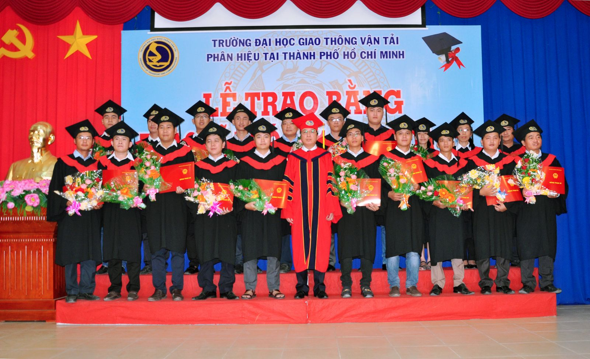
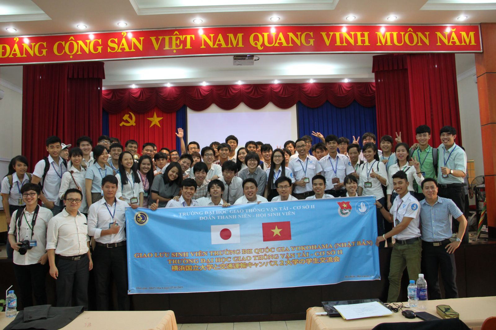

Lễ công bố Quyết định thành lập Phân hiệu năm 2016
Phân hiệu Trường Đại học Giao thông Vận tải tại TP. Hồ Chí Minh được thành lập theo quyết định số 2419/QĐ-BGDĐT ngày 15 tháng 07 năm 2016 của Bộ trưởng Bộ Giáo dục và Đào tạo trên nền tảng Cơ sở II (được thành lập theo Quyết định số 139/TCCB ngày 27/04/1990 của Bộ Giáo dục và Đào tạo). Phân hiệu là một bộ phận cấu thành quan trọng của Trường Đại học Giao thông Vận tải trực thuộc Bộ Giáo dục và Đào tạo. Trường tọa lạc trên diện tích hơn 16ha tại Thành phố Thủ Đức, Thành phố Hồ Chí Minh, quy mô đào tạo trên 6000 sinh viên và học viên các hệ.
Các ngành tổ chức đào tạo tại Phân hiệu Trường Đại học Giao thông Vận tải tại TP. Hồ Chí Minh gồm: Kỹ thuật Xây dựng công trình giao thông, Kỹ thuật Cơ khí động lực, Kỹ thuật Xây dựng, Kỹ thuật Điện - Điện tử, Công nghệ thông tin, Kế toán, Kinh tế xây dựng, Quản lý xây dựng, Quản trị kinh doanh, Kinh tế, Khai thác vận tải, Kiến trúc, Logistics và Quản lý chuỗi cung ứng, Tài chính – Ngân hàng, Quản trị dịch vụ du lịch và lữ hành, Kinh doanh quốc tế với hơn 60 chuyên ngành đào tạo khác nhau. Bên cạnh loại hình đào tạo Đại học chính quy, Phân hiệu còn có nhiều loại hình đào tạo khác nhằm đáp ứng nhu cầu của xã hội và giúp người học có được sự thuận lợi, chủ động tối đa về thời gian theo học như: Vừa làm Vừa học, Liên thông, Văn bằng 2.
Lễ Trao bằng tốt nghiệp cho các Tân kỹ sư, Cử nhân
Đào tạo ở bậc sau đại học cũng luôn được Nhà trường quan tâm và chú trọng đầu tư phát triển. Hiện nay, tại Phân hiệu đã đào tạo 12 ngành bậc sau đại học (Kỹ thuật xây dựng công trình giao thông, Kỹ thuật Cơ sở hạ tầng, Kỹ thuật xây dựng công trình dân dụng và công nghiệp, Kỹ thuật cơ khí động lực, Kỹ thuật điện tử, Kỹ thuật viễn thông, Kỹ thuật điều khiển và tự động hóa, Quản lý xây dựng, Tổ chức và quản lý vận tải, Quản lý kinh tế, Quản trị kinh doanh, Công nghệ thông tin) với quy mô hàng năm hơn 200 học viên cao học theo học.

Lễ Trao bằng tốt nghiệp cho các Tân Thạc sỹ
Đội ngũ cán bộ giảng viên và cơ sở vật chất của Phân hiệu cũng luôn được quan tâm và phát triển. Tính đến tháng 07/2024, Phân hiệu có tổng số 180 cán bộ, viên chức và người lao động, trong đó có 129 Giảng viên với 05 Phó Giáo sư, 30 Tiến sĩ, 85 Thạc sĩ, số giảng viên có trình độ trên đại học trên 93%, nhiều giảng viên đang theo học chương trình đào tạo sau đại học trong nước và quốc tế. Hàng năm, các sinh viên tốt nghiệp giỏi, xuất sắc được Nhà trường tuyển chọn giữ lại làm giảng viên, nhiều giảng viên trẻ được cử đi học tập, nâng cao trình độ ở bậc sau đại học tại các trường đại học uy tín trên thế giới.
Giảng viên của Phân hiệu được công nhận chức danh Phó Giáo sư năm 2013
Trang thiết bị thực tập, thực hành, thí nghiệm của sinh viên luôn được Nhà trường chú trọng đầu tư trang bị, nhiều sách tham khảo và giào trình tại thư viện luôn được cập nhật bổ sung để sinh viên có thể tiếp cận với nhiều tri thức mới. Các giảng đường thường xuyên được cải tạo và xây dựng thêm mới để đảm bảo cho các sinh viên ngoài việc học trên lớp theo lịch học còn có không gian tự học lý tưởng. Ký túc xá được đầu tư hiện đại quay mô, với 1 nhà 7 tầng sức chứa 1000 sinh viên, bên cạnh đó có 8 dãy nhà nội trú cấp bốn với gần 1000 sinh viên. Ký túc xá có khuôn viên rộng trên 12ha, đầy đủ cá sân chơi thể thao, phòng tập GYM, sân bóng cỏ nhân tạo và các dịch vụ phong phú đáp ứng tối đa nhu cầu ăn ở lưu trú cho sinh viên.

Xưởng thực hành mở dành cho sinh viên ngành Kỹ thuật ô tô
Từ khi thành lập đến nay, Phân hiệu Trường Đại học Giao thông Vận tải tại TP. Hồ Chí Minh luôn là đơn vị đạt danh hiệu Tập thể Lao động suất sắc trong phong trào thi đua hàng năm. Do có nhiều thành tích trong sự nghiệp đào tạo nguồn nhân lực cung cấp cho khu vực Miền Nam, trường đã nhận được đón nhận nhiều danh hiệu cao quý do Đảng và của Nhà nước trao tặng (Huân chương Lao động hạng Ba năm 2000, Huân chương Lao động hạng Nhì năm 2005...). Đặc biệt năm 2010, Nhà trường đã vinh dự được Nhà nước tặng thưởng Huân chương lao động hạng Nhất.

Sinh viên Phân hiệu tham quan công trình xây dựng tuyến Metro số 1 Bến Thành - Suối Tiên tại Tp. Hồ Chí Minh
Trải qua 34 năm xây dựng và phát triển (27/4/1990 - 27/4/2024), Phân hiệu Trường Đại học Giao thông Vận tải tại TP. Hồ Chí Minh đã góp phần tích cực vào sự nghiệp giáo dục của Nước Nhà. Với sự chỉ đạo của Ban Giám hiệu Nhà trường, Đảng ủy và Ban Giám đốc, toàn thể cán bộ, giảng viên, nhân viên cũng như sinh viên, học viên tại Phân hiệu luôn tin tưởng vào thương hiệu và vị thế của Nhà trường, cùng nhau xây dựng Trường trở thành một trong những trung tâm đào tạo nguồn nhân lực chất lượng cao hàng đầu tại Khu vực phía Nam và của nước nhà.
Chiến lược phát triển Trường Đại học Giao thông vận tải giai đoạn 2021 – 2030
(Ban hành theo Nghị quyết số 33/NQ-HĐT ngày 01/12/2021 của Hội đồng Trường)
1. SỨ MẠNG
Trường Đại học Giao thông vận tải có sứ mạng đào tạo, nghiên cứu khoa học, chuyển giao công nghệ chất lượng cao theo xu thế hội nhập, có trách nhiệm xã hội nhằm thúc đẩy sự phát triển bền vững của ngành giao thông vận tải và đất nước.
2. TẦM NHÌN
Trở thành trường đại học đa ngành theo định hướng nghiên cứu, khẳng định vị thế hàng đầu Việt Nam trong lĩnh vực giao thông vận tải, có uy tín và chất lượng ngang tầm châu Á.
3. GIÁ TRỊ CỐT LÕI
Tiên phong – Chất lượng – Trách nhiệm – Thích ứng
- Tiên phong: Luôn đi trước, đón đầu các xu thế
phát triển trong đào tạo và nghiên cứu khoa học, chủ động nắm
bắt và giải quyết những thách thức của xã hội.
- Chất lượng: Tạo ra nguồn nhân lực chất
lượng cao, các sản phẩm khoa học công nghệ có uy tín.
- Trách nhiệm: Đối với cán bộ, giảng
viên, người học, cộng đồng, xã hội và quốc tế.
- Thích ứng: Đổi mới theo điều kiện, thời
gian, hoàn cảnh để ngày một phát triển.
4. TRIẾT LÝ GIÁO DỤC
Trường Đại học Giao thông vận tải hướng tới đào tạo người học
trở thành công dân toàn cầu, có tinh thần dân tộc và trách nhiệm
quốc tế.
Hoạt động đào tạo giúp người học phát triển toàn diện về
đức-trí-thể-mỹ, trang bị kiến thức nền tảng cốt lõi và chuyên
sâu cho mỗi cá nhân. Nhà trường xác định giáo dục phải gắn kết
chặt chẽ với tiến bộ khoa học và công nghệ của thế giới, nhu cầu
nguồn nhân lực, sự phát triển kinh tế - xã hội của đất nước và
nhiệm vụ bảo vệ, xây dựng Tổ quốc.
Nhà trường áp dụng phương pháp giáo dục tích cực, học đi
đôi với hành, kiến tạo môi trường giúp người học xây dựng và rèn
luyện ý thức tự học suốt đời, khả năng thích ứng với mọi hoàn
cảnh nhằm phát huy tốt nhất tiềm năng và khả năng sáng tạo.
Nhà trường xác định người học là trung tâm, người thầy
truyền cảm hứng.
5. MỤC TIÊU
Mục tiêu tổng quát
Phát triển Trường Đại học Giao thông vận tải thành trường
đại học tự chủ, đa ngành theo định hướng nghiên cứu, có uy tín
và chất lượng ngang tầm Châu Á.
Mục tiêu chiến lược
Trở thành trường đại học đa ngành theo định hướng nghiên
cứu;
Xây dựng, phát triển các viện, trung tâm nghiên cứu khoa
học mạnh, có uy tín và năng lực xuất khẩu tri thức, chuyển giao
công nghệ, đặc biệt là trong lĩnh vực giao thông vận tải;
Đảm bảo chất lượng đào tạo theo chuẩn mực quốc tế;
Kiến tạo môi trường giáo dục chủ động và sáng tạo, hình
thành ý thức học tập suốt đời, thích ứng với mọi điều kiện hoàn
cảnh;
Có trách nhiệm với cộng đồng, đáp ứng yêu cầu phát triển
của đất nước.
6. NHIỆM VỤ VÀ GIẢI PHÁP TRỌNG TÂM
6.1.Xây dựng trường đại học tự chủ với mô hình quản trị tiên tiến, hệ thống và phương thức quản lý chuyên nghiệp đạt tới mô hình của trường đại học thông minh
Tổ chức quản lý hoạt động của các đơn vị thuộc trường theo ISO
9001 và ISO 26000.
Xây dựng cơ sở dữ liệu số hoá về các mặt hoạt động của Nhà
trường, hoàn thành việc xây dựng và vận hành Nhà trường điện tử
vào năm 2021, hướng tới mô hình đại học thông minh vào năm 2025.
Xây dựng Phân hiệu Trường Đại học GTVT tại TP.HCM là một
đơn vị thuộc Trường được phân cấp tự chủ cao, theo mô hình
Trường trong Trường.
Đến hết năm 2023 hoàn thành việc đổi mới, tinh gọn cơ cấu
tổ chức các đơn vị trong Trường hoạt động theo cơ chế tự chủ và
trách nhiệm giải trình.
6.2. Đa dạng hóa ngành, phương thức và loại hình đào tạo phù hợp với xu thế phát triển khoa học công nghệ
Tối ưu hệ thống đào tạo tín chỉ, đáp ứng cao nhất các nhu cầu
học tập của người học.
Rà soát và xây dựng chương trình đào tạo theo chuẩn CDIO
đáp ứng nhu cầu nguồn nhân lực chất lượng cao của xã hội, trang
bị cho người học những kiến thức, kỹ năng tổng hợp, phát triển
năng lực và tính sáng tạo. Chú trọng phát triển chương trình đào
tạo liên kết với nước ngoài; chương trình đào tạo hợp tác doanh
nghiệp; chương trình đào tạo theo cách tiếp cận liên ngành,
xuyên ngành.
Đa dạng hoá phương thức và loại hình đào tạo đáp ứng xu
thế phát triển khoa học công nghệ: tập trung phát triển các
chương trình đào tạo mở, đào tạo ngắn hạn, đào tạo thường xuyên
phục vụ nhu cầu tái đào tạo, học tập suốt đời.
Nâng chuẩn chất lượng đầu ra đối với các ngành học nhằm
đem lại sự hài lòng cho nhà tuyển dụng và xã hội. Chú trọng đào
tạo tinh hoa tạo thương hiệu cho Nhà trường.
Triển khai kiểm định chất lượng cơ sở giáo dục và chương
trình đào tạo theo hướng tiếp cận quốc tế. Đến năm 2025, có ít
nhất 05 chương trình đào tạo đạt chuẩn kiểm định chất lượng quốc
tế.
6.3. Khẳng định vai trò tiên phong, vị thế hàng đầu Việt Nam về khoa học công nghệ trong lĩnh vực giao thông vận tải nhằm phục vụ công cuộc công nghiệp hoá – hiện đại hoá đất nước
Đến năm 2025, xây dựng tối thiểu 03 nhóm nghiên cứu mạnh thuộc
một số hướng nghiên cứu ưu tiên: đường sắt, đường bộ, cơ khí
giao thông, vật liệu tiên tiến, giao thông thông minh, thành phố
thông minh, logistic.
Xây dựng và phát triển các viện nghiên cứu, trung tâm khoa
học công nghệ có khả năng độc lập, chủ động thực hiện các dịch
vụ khoa học công nghệ, tạo ra các sản phẩm khoa học có chất
lượng cao, có khả năng giải quyết các vấn đề khoa học – thực
tiễn phức tạp có tính liên ngành, tạo thương hiệu, đem lại lợi
ích cho Nhà trường và xã hội.
Tích cực, chủ động tham gia các nhiệm vụ khoa học công
nghệ như: biên soạn quy trình, tiêu chuẩn, quy chuẩn, tham gia
thực hiện các đề tài, dự án NCKH các cấp. Nâng cao số lượng và
chất lượng đề tài, dự án: đến năm 2023, số lượng đề tài NCKH
triển khai thực hiện cấp Nhà nước, cấp Bộ hoặc tương đương, đề
tài theo đơn đặt hàng của doanh nghiệp là 20-25 đề tài/năm; đến
năm 2025, 50% đề tài cấp Bộ trở lên có hợp tác với đối tác nước
ngoài.
Đến năm 2023, công bố ít nhất 600 bài báo đăng trên tạp
chí trong nước và quốc tế/năm, trong đó có tối thiểu 150 bài báo
quốc tế/năm thuộc danh mục Web of Science, Scopus; tổ chức tối
thiểu 20 hội thảo/năm; hằng năm có sản phẩm sở hữu trí tuệ,
quyền tác giả, có các đề tài nghiên cứu khoa học của giảng viên
và sinh viên tham dự và đạt giải thưởng quốc gia, quốc tế.
Tạp chí Khoa học Giao thông vận tải của Trường hướng tới
mục tiêu thuộc danh mục Scopus, Web of Science.
Xây dựng Quỹ phát triển khoa học công nghệ làm nguồn gieo
mầm các hạt nhân KHCN cho Nhà trường: hỗ trợ hoàn thiện, thương
mại hóa sản phẩm KHCN.
6.4. Nâng cao chất lượng đội ngũ viên chức theo yêu cầu hội nhập quốc tế
Xây dựng bộ tiêu chí, tiêu chuẩn quy định năng lực viên chức;
đánh giá mức độ thực hiện công việc theo chỉ số KPI, có cơ chế
khen thưởng – kỷ luật nhằm thúc đẩy người lao động trong Nhà
trường nâng cao trình độ, năng lực, chuyên môn, nghiệp vụ. Đến
năm 2025, 15% giảng viên có học hàm GS-PGS, 45% giảng viên có
học vị tiến sĩ; phấn đấu trên 85% giảng viên đạt trình độ ngoại
ngữ B2 theo chuẩn khung năng lực châu Âu hoặc tương đương, 60%
viên chức hành chính sử dụng tốt tiếng Anh và 100% viên chức
thành thạo tin học trong công việc.
Xây dựng cơ chế thu hút các nhà khoa học uy tín trong nước
và quốc tế, các nhà khoa học trẻ tài năng về làm việc và trao
đổi chuyên môn, nghiệp vụ tại trường.
6.5. Tăng cường và hiện đại hoá cơ sở vật chất
Quản lý, khai thác hiệu quả cơ sở vật chất hiện có.
Xây dựng và hiện đại hóa cơ sở vật chất có trọng tâm,
trọng điểm, phân kỳ đầu tư theo giai đoạn. Ưu tiên phát triển
các phòng thí nghiệm.
Đảm bảo diện tích phòng làm việc, phòng học, ký túc xá đạt
chuẩn theo quy định hiện hành.
Phát triển hạ tầng công nghệ thông tin theo hướng hiện
đại, đồng bộ, đáp ứng yêu cầu của trường đại học thông minh.
Phát triển hệ thống thư viện tiên tiến, đa chức năng, thân
thiện, sáng tạo.
Đến năm 2030, Trường có thêm phân hiệu mới.
6.6. Phát triển nguồn lực tài chính theo hướng đa dạng hoá và bền vững
Quản lý và sử dụng có hiệu quả nguồn lực tài chính.
Đến năm 2023, đạt mức 100% tự chủ về chi tiêu thường
xuyên. Hàng năm nâng dần tỷ lệ trích lập chênh lệch thu chi cho
Quỹ phát triển hoạt động sự nghiệp.
Tăng quy mô và đa dạng hoá các nguồn lực tài chính.
Tiếp tục tìm kiếm và phát triển các nguồn thu từ hoạt động
dịch vụ, nguồn xã hội hoá.
Đầu tư mạnh hơn nữa cho công tác NCKH và chuyển giao công
nghệ nhằm tạo ra các sản phẩm dịch vụ chất lượng cao. Đến năm
2025, tăng tỉ trọng nguồn thu từ các hoạt động khoa học, công
nghệ, đổi mới sáng tạo, nghiên cứu chuyển giao, lao động sản
xuất lên mức trên 15% tổng nguồn thu của Trường.
Đến năm 2025, nguồn thu từ đào tạo khác ngoài hệ chính quy
đóng góp trên 10% tổng nguồn thu của Trường.
6.7. Kiến tạo môi trường giáo dục thân thiện, dân chủ, sáng tạo và trách nhiệm cho viên chức, người lao động, người học; phát huy niềm tự hào, bản sắc riêng và uy tín thương hiệu của Trường Đại học Giao thông vận tải thông qua các hoạt động phục vụ cộng đồng
Tăng cường nhận thức về văn hoá mang bản sắc Trường Đại học
GTVT, tạo ấn tượng tốt về một Nhà trường thân thiện và chuyên
nghiệp. Đến năm 2021, hoàn thiện bộ quy tắc về văn hoá ứng xử.
Hoàn thiện chính sách khuyến khích viên chức, người lao
động, người học đóng góp cho sự phát triển của Nhà trường.
Nâng cao ý thức trách nhiệm, chất lượng phục vụ của viên
chức, người lao động với người học.
Tạo môi trường lành mạnh, bổ ích cho người học thông qua
các hoạt động văn hoá, văn nghệ, thể dục thể thao,… nhằm phát
triển toàn diện về đức - trí - thể - mỹ.
Phát triển mạng lưới cựu sinh viên, mở rộng các quỹ khuyến
học, quỹ học bổng để khuyến khích các sinh viên giỏi, hỗ trợ -
giúp đỡ các sinh viên có hoàn cảnh khó khăn.
Thành lập trung tâm tư vấn, hỗ trợ việc làm và khởi nghiệp
sáng tạo cho sinh viên.
Tích cực và chủ động trong các hoạt động kết nối và phục
vụ cộng đồng.
Đẩy mạnh truyền thông và quản trị thương hiệu.
6.8. Tăng cường mở rộng các hoạt động đối ngoại trong nước và quốc tế, xây dựng các quan hệ hợp tác về đào tạo và nghiên cứu thực chất, hiệu quả nhằm nâng cao vị thế của Trường Đại học Giao thông vận tải.
Quan hệ hợp tác chặt chẽ với các trường đại học, viện nghiên
cứu, doanh nghiệp có tiềm lực. Đóng vai trò là một thành viên
tích cực trong các hiệp hội, mạng lưới hợp tác quốc tế về giáo
dục đào tạo và khoa học công nghệ.
Xây dựng môi trường đào tạo chuẩn quốc tế.
Tổ chức các chương trình liên kết đào tạo, đề tài, dự án
KHCN, hội thảo hợp tác quốc tế.
Tăng cường hoạt động trao đổi sinh viên, học viên, giảng
viên, nghiên cứu viên, viên chức quản lý với các đối tác quốc
tế. Từ năm 2025, các khoa chuyên môn đều có chương trình trao
đổi hàng năm.
Vận hành có hiệu quả các trung tâm hợp tác quốc tế về đào
tạo, NCKH.
Nâng cao thứ bậc của Nhà trường trên các bảng xếp hạng đại
học ở trong nước và quốc tế. Đến năm 2025, Nhà trường có ngành
đào tạo được xếp hạng trong bảng QS Ranking khu vực châu Á.
Tiền thân của Trường Đại học Giao thông Vận tải là Trường Cao đẳng Công Chính, được thành lập ngày 25-12-1918 dưới thời Pháp thuộc, và được khai giảng lại dưới Chính thể Việt nam Dân chủ Cộng hòa vào ngày 15-11-1945.
Ngày 24/3/1962, Thủ tưởng Chính phủ Phạm Văn Đồng đã ký Quyết định
số 42/CP về việc thành lập Trường Đại học Giao thông Vận tải.
Sau ngày miền Nam hoàn toàn giải phóng, để đáp ứng nhu cầu mới
cho sự nghiệp xây dựng đất nước nói chung và phát triển giao thông
vận tải khu vực phía Nam nói riêng, ngày 27/04/1990, Bộ trưởng Bộ
Giáo dục và Đào tạo ký Quyết định số 139/TCCB thành lập Cơ sở II của
Trường Đại học Giao thông Vận tải tại Tp. Hồ Chí Minh.

Quyết định thành lập Cơ sở II - Trường Đại học GTVT tại Tp. Hồ Chí Minh ngày 27/04/1990
Để phù hợp với Luật Giáo dục Đại học và Điều lệ Trường Đại học, ngày 15/07/2016, Bộ trưởng Bộ Giáo dục và Đào tạo ký Quyết định số 2419/QĐ-BGDĐT về việc thành lập Phân hiệu Trường Đại học Giao thông Vận tải tại TP. Hồ Chí Minh trên nền tảng của Cơ sở II trước đây.

Lễ công bố Quyết định thành lập Phân hiệu năm 2016
Phân hiệu Trường Đại học Giao thông Vận tải tại TP. Hồ Chí Minh tọa lạc trên khuôn viên có diện tích gần 16 ha với các Khu Văn phòng 3 tầng, Khu giảng đường với gần 60 phòng học, Trung tâm Thông tin - Thư viện 3 tầng với diện tích xây dựng gần 2000 m2, có hệ thống phòng đọc dành riêng cho giảng viên và sinh viên với hơn 300 chỗ ngồi, phòng Hội thảo, phòng truy cập Internet với máy tính hiện đại. Ký túc xá sinh viên gồm 8 dãy nhà và 01 tòa nhà cao 7 tầng (đưa vào sử dụng từ tháng 8/2014) với gần 400 phòng ở, có thể tiếp nhận trên 2000 sinh viên nội trú.

Ký túc xá 7 tầng hiện đại dành cho sinh viên
Các phòng thí nghiệm: Trọng điểm đường bộ, Vật lý, Hoá học, Điện kỹ thuật, Cơ thuỷ lực, Sức bền vật liệu, Cơ học đất, Điều khiển học, phòng máy tính, phòng học Ngoại ngữ, xưởng thực tập Cơ khí, v.v… đáp ứng cho sinh viên thực hiện những bài thí nghiệm cần thiết theo quy định của chương trình đào tạo.

Phòng thí nghiệm về môi trường
Kể từ khi thành lập đến nay, Phân hiệu Trường Đại học Giao thông Vận tải tại TP. Hồ Chí Minh đã góp phần quan trọng trong việc đào tạo cán bộ khoa học kỹ thuật cho ngành giao thông vận tải các tỉnh phía Nam nói riêng và các ngành kinh tế quốc dân nói chung.
Cơ cấu tổ chức của Phân hiệu Trường Đại học Giao thông Vận tải tại TP. Hồ Chí Minh theo hướng đơn giản, hiệu quả với các Phòng, Trung tâm, Ban chức năng và các Khoa, Bộ môn. Hiện tại, Phân hiệu có 11 Phòng, Ban chức năng, Trung tâm và 03 Khoa, 03 Bộ môn trực thuộc.
Hiện nay, lực lượng CBGVCNV tại Phân hiệu là hơn 184 viên chức và người lao động, trong đó có 130 Giảng viên với 05 Phó Giáo sư, 32 Tiến sĩ, 92 Thạc sĩ, có 24 giảng viên đang làm NCS, 08 giảng viên đang theo học Cao học. Ngoài ra, lực lượng giảng viên được điều động tăng cường từ cơ sở chính tại Hà Nội mỗi học kỳ gần 200 người để giảng dạy, hướng dẫn sinh viên học tập và nghiên cứu.

Giảng viên Phân hiệu được công nhận chức danh Phó Giáo sư năm 2013
Ngoài địa điểm chính tại Tp. Hồ Chí Minh, do yêu cầu của các địa phương, Nhà trường đã và đang tiếp tục mở các lớp đào tạo hệ không tập trung tại các tỉnh khu vực miền trung, các tỉnh lận cận Thành phố Hồ Chí Minh, các tỉnh đồng bằng sông Cửu Long và Tây Nguyên: Đồng Nai, Tây Ninh, Cần Thơ, Sóc Trăng, An Giang, Trà Vinh, Long An, Tiền Giang, Phú Yên, Khánh Hoà, Gia Lai, Bạc Liêu, Đắc Lắk....v.v
Năm 1990, khi mới thành lập, Nhà trường chỉ có chỉ có khoảng 109 sinh viên, đến nay, trong năm học 2019 - 2020 tổng số sinh viên, học viên đang theo học tại Trường đạt quy mô hơn 6.500 sinh viên, học viên cao học các hệ, trong đó có gần hơn 6000 sinh viên hệ Chính quy và gần 500 sinh viên các hệ Vừa làm Vừa học, Liên thông Đại học, Đại học Bằng 2, Cao học.

Lễ trao bằng tốt nghiệp cho các Tân Kỹ sư, Cử nhân
Từ chỗ chỉ có 02 ngành đào tạo là ngành Kinh tế vận tải thủy bộ và ngành Vận tải Ô tô Khóa 29 khi thành lập năm 1990, đến nay (năm học 2022 - 2023) Phân hiệu đã hiện đang thực hiện đào tạo 18 Ngành trong đó bao gồm hơn 60 chuyên ngành khác nhau.
Nhà trường luôn chú trọng công tác bồi dưỡng và cử nhiều đội sinh viên tham gia các kỳ thi Olympic Cơ học, Toán học, Tin học toàn quốc, các Cuộc thi do Thành đoàn Tp. Hồ Chí Minh tổ chức và đã đạt nhiều giải thưởng lớn.

Đăng cai Olympic Cơ học Toàn quốc năm 2002
Thời kỳ đầu mới thành lập, Nhà trường chỉ tập trung vào việc xây dựng cơ sở vật chất và chủ yếu vào công tác đào tạo là chính. Từ năm 1997 công tác NCKH bắt đầu được triển khai và đã có những kết quả ngày càng tiến bộ. Tính đến nay đã có hơn 30 đề tài cấp Bộ, hàng trăm đề tài cấp Trường được thực hiện; Hằng năm, số lượng đề tài NCKH của sinh viên cũng đạt trung bình trên 60 đề tài được thực hiện.

Hội nghị tổng kết nghiên cứu khoa học của sinh viên
Bên cạnh đó, tại Phân hiệu có 02 đơn vị sản xuất, đó là: Công ty Cổ phần UTC2 và Chi nhánh Công ty TNHH Tư vấn và xây dựng Đại học giao thông vận tải. Công ty Cổ phần UTC2 chính thức khai trương ngày 10/01/2014 có lĩnh vực hoạt động chủ yếu là tư vấn thiết kế, tư vấn giám sát và thi công công trình đã thực hiện được nhiều đề tài NCKH phục vụ sản xuất, ký kết và thực hiện nhiều hợp đồng tư vấn thiết kế, tư vấn giám sát và xây dựng các công tình cho các địa phương khu vực phía Nam và trên địa bàn Tp. Hồ Chí Minh với doanh thu gần 100 tỷ đồng.

Khai trương Công ty Cổ phần UTC2
Trong hơn 33 năm xây dựng và trưởng thành (27/4/21990 - 27/4/2023), Phân hiệu Trường Đại học GTVT tại TP. Hồ Chí Minh đã đào tạo được gần 50.000 kỹ sư, cử nhân các hệ, góp phần quan trọng vào công cuộc xây dựng và phát triển hệ thống Giao thông vận tải tại các tỉnh thành khu vực phía Nam. Mạng lưới cựu sinh viên UTC2 phát triển lớn mạnh tại các tỉnh phía nam; trong năm 2022 Phân hiệu đã thành lập và ra mắt Ban liên lạc mạng lưới cựu sinh viên tại các tỉnh: Long An, Gia Lai, Ninh Thuận, Quảng Ngãi, Bình Dương, Bình Phước, Bến Tre, Lâm Đồng, Tp. Hồ Chí Minh và Ban liên lạc mạng lưới cựu sinh viên ở 02 khối ngành: Viễn thông, Tự động hóa và điều kiển. Đặc biệt, Phân hiệu còn thành lập và ra mắt Câu lạc bộ doanh nhân cựu sinh viên UTC2, nơi kết nối những nhà lãnh đạo doanh nghiệp là cựu sinh viên UTC2, đây là mô hình hoạt động của cựu sinh viên tiêu biểu tại khu vực phía nam và cả nước.
Ngoài bậc đại học, từ năm 1996, Phân hiệu đã tiến hành đào tạo bậc sau đại học. Từ đó đến nay tại Phân hiệu đã đào tạo được hàng ngàn Thạc sỹ thuộc các ngành Xây dựng công trình giao thông, Cơ khí giao thông, Quản trị kinh doanh... Hiện nay (năm học 2022 - 2023) số lượng học viên cao học tại Phân hiệu là trên 200 học viên.
Lễ trao bằng tốt nghiệp cho các Tân thạc sĩ tại Phân hiệu
Nhà trường có quan hệ hợp tác với các Trường: Đại học Tổng hợp Quốc gia Giao thông Đường sắt Matxcơva (Liên Bang Nga); Đại học Tổng hợp Giao thông Tây Nam (Trung Quốc); Đại học Đamstat và Đresđen (Cộng hoà Liên bang Đức); Đại học Cầu Đường Pari (Pháp); Cao đẳng Giao thông Viên Chăn (Lào) v.v…
Giao lưu với giảng viên và sinh viên Trường Đại học Yokohama Nhật bản
Với những thành tích đã đạt được, Phân hiệu đã vinh dự được tặng thưởng nhiều danh hiệu cao quý như: Huân chương Lao động hạng Nhất, Nhì, Ba vào các năm 2010, 2005 và 2000. Đặc biệt, năm 2020 Phân hiệu vinh dự nhận được Cờ thi đua của Chính phủ lần thứ II. Ngoài ra, Phân hiệu còn nhận được các phần thưởng cao quý khác như: Cờ thi đua của Bộ Giáo dục và Đào tạo và Cờ truyền thống của UBND Tp. Hồ Chí Minh; Bằng khen của Thủ tướng Chính phủ và các Bộ, Ngành, địa phương khu vực phía Nam…